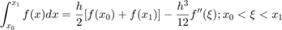

Practica 4. Convolución y correlación de señales.
Autor. Alvarado Angeles Francisxo Javier
Grupo. 2MV1
Contents
Objetivos.
- Conocer métodos básicos de integración numérica.
- Manipulación de instrucciones en MATLAB.
- Simular convoluciones y correlaciones de señales continuas.
- Simular convoluciones y correlaciones de señales discretas.
Introducción.
Formulas cerrada de Newton-Cotes
Las formulas cerradas de Newton-Cotes nos dicen que si tú tienes una función que es derivable un número determinado de veces, y la derivada es continua, entonces en lugar de hacer la integral de tú puedes aplicar la integral a la expresión del lado derecho la cual es un polinomio más la suma de un error la cual sera una aproximación (ya que tiene un cierto error) de la integral de tu función original

Estas formulas de Newton-Cotes se llaman formula cerrada de puntos donde n representa el grado del polinomio que se quiere usar para hacer la aproximación, además de que también representa la cantidad de puntos que se necesitan para tener el grado de dicho polinomio.
Donde:
Inicio del intervalo.
Fin del intervalo.
La distancia que hay de un punto a otro(paso).
 Representa los puntos.
Representa los puntos.
Regla del Trapecio
Es nuestra primer regla de Newton-Cotes es definida de esta manera porque nos define el área de un trapecio, y en este caso lo que estamos haciendo es encontrar un polinomio de grado uno y siguiendo nuestra analogia anterior, esto quiere decir que necesitamos 2 puntos para poder tener el polinomio de grado 1.


Donde:
En este caso la formula de aproximación tiene algo que se llama el grado de precisión que es el grado del polinomio más grande, de tal manera que la integral tenga error cero, es decir en este caso para nuestra regla del trapecio nuestro grado de precisión es 1 debido a que si usamos esta formula para un polinomio de grado 1 nuestro error sera cero.
Ejemplo:

Regla de Simpson (n=2).
Es nuestra segunda regla de Newton-Cotes y la ocupamos para interpolar 3 puntos y encontrar un polinomio de segundo grado, esa formula la llamaremos regla de Simpson, la cual es definida de la siguiente manera.

Donde:

Para la regla de Simpson nuestro grado de precisión es de 3 debido a que si usamos esta formula para un polinomio de grado 3 nuestro error sera cero esto se debe a que en el error tenemos definida a la derivada cuarta.
Ejemplo:

Regla de tres octavos de Simpson. (n=3)
Es nuestra tercer regla de Newton-Cotes y la ocupamos para hacer la interpolación de un polinomio de tercer grado, por lo cual ocuparemos 4 puntos, y esta formula esta definida de la siguiente manera:

Para la regla de tres octavos de Simpson nuestro grado de precisión es de 3 debido a que si usamos esta formula para un polinomio de grado 3 nuestro error sera cero esto se debe a que en el error tenemos definida a la derivada cuarta.

Formulas cerradas de Newton-cotes compuestas
Esta sección es una extensión de las reglas de Newton-Cotes, como vimos con anterioridad la regla del trapecio sin su error la habíamos definido de la siguiente manera.
Regla compuesta del trapecio.
La idea de usar la regla compuesta del trapecio es que en lugar de usar solo un trapecio para aproximar toda un área, subdividamos el área de nuestro intervalo en subintervalos y para cada subintervalo usar un trapecio, dicha extensión de la regla del trapecio se define de la siguiente manera
Donde:
n= Número de subintervalos.
h= (Paso)
xj= a+jh; 

Ejemplo:

% *Regla compuesta de simpson* % % La regla compuesta de Simpson al igual que la regla compuesta del trapecio es dividir toda el área en subintervalos y al hacer algunas % modificaciones a la formula de simpson queda de la siguiente manera: % % $$\int_{a}^{b}f(x) dx=\frac{h}{3}[f(a)+2\sum_{j=1}^{\frac{n}{2}-1}f(x_{2j})+4\sum_{j=1}^{\frac{n}{2}}f(x_{2j-1})+f(b)]-\frac{b-a}{180}h^{4}f^{4}(u)$$ % % Donde: % % n=Número de subintervalos.(par) % % h= $\frac{b-a}{n};$ (Paso) % % xj=a+jh; $j=0,1,2,...,n$ % % *Cuadratura Gaussiana* % % Lo que intenta hacer la cuadratura es aproximar una integral por la evaluación en determinados puntos de una función multiplicada % por determinadas constantes. % % $$\int_{a}^{b}f(x) dx = \sum_{i=1}^{n}c_{i}f(x_i)$$ % % En comparación con los métodos descritos con anterioridad este método en lugar de usar los polinomios de lagrange utiliza los % polinomios de legendre, alguno de estos polinomios son: % % $${ 1,x,x^{2}-\frac{x^3}{3},x^{3}-\frac{3x}{5},x^{4}-\frac{6x^2}{7},...}$$ % % * $p_n$-Polinomios de legendre de grado n. % * $x_1,x_2,...,x_n$-Raíces de $p_n(x)$ % * $C_i=\int_{-1}^{1} \prod_{j=1}^{n}\frac{x-x_j}{x_j-x_i}dx$ entonces $\int_{-1}^{1}p(x) dx = \sum_{i=1}^nC_{i}p(x_i)$ % % Con anterioridad habíamos hablado del grado de exactitud que tiene un método, en este caso entre mayor sea el valor de n (límite % superior de nuestra sumatoria) mayor sera nuestra precisión.\\Por otro lado también se pueden utilizar tablas para saber cuales son % las raices y los $C_i$ % % % % <<imagen 09.PNG>> % %
Desarrollo
Problema 1
x= @(t) exp(-t).*(0<=t & t<=1); y= @(t) t.*(-1<=t & t<=1); convuno(x,y)

Problema 2
x= @(t) 1.*(0<=t & t<=3)-(1).*(3<t & t<=4); y= @(t) 1.*(0<=-t & -t<=3)-(1).*(3<-t & -t<=4); convdos(x,y)

Problema 3
n=-4:4; a=[0 0 4 2 0 2 4 0 0]; b=[0 -9 -6 -3 0 3 6 9 0]; convdisc([n;a],[n;b])


Problema 4.
En este inciso nos pide la correlacion de c con d pero como d es par al momento de invertir 2 veces una por la operación de correlacaion y otra por la operación de la convolución, entonces dicho lo anteior la correlación de c con d nos queda igual que el inciso anterior.
n=-4:4; a=[0 0 4 2 0 2 4 0 0]; b=[0 -9 -6 -3 0 3 6 9 0]; convdisc([n;a],[n;b])
Problema 5
conv(a,b)
ans =
Columns 1 through 13
0 0 0 -36 -42 -24 -24 -36 0 36 24 24 42
Columns 14 through 17
36 0 0 0